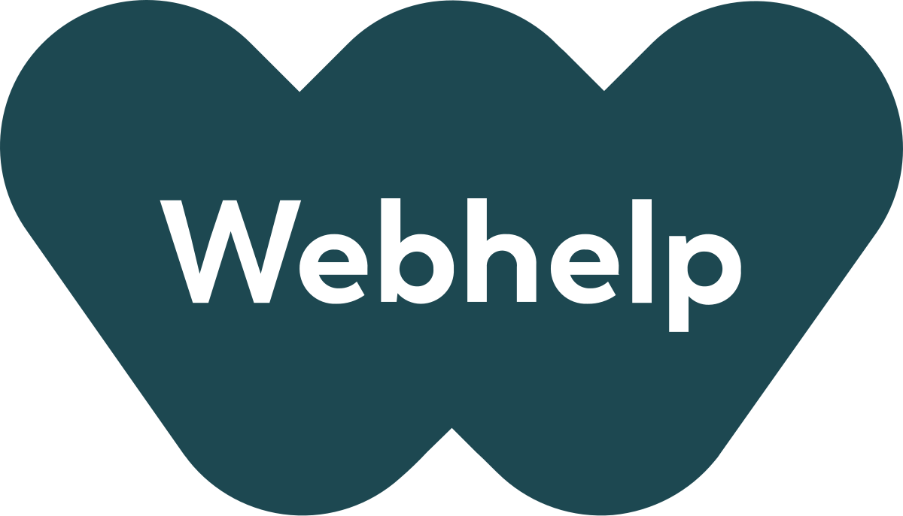

Parcours Professionnel
Mon évolution en tant qu'ingénieur, à travers des environnements techniques exigeants.
Architecte de Solutions Informatiques (Stage)
Airbus
Mars 2025 - Sept. 2025
Toulouse, France

Modernisation et optimisation des infrastructures Data critiques pour l'ingénierie aéronautique.
- Architecture Cloud (AWS) : Conception d'architectures serverless et migration d'une base de données S3 vers DynamoDB, réduisant la complexité d'accès de O(N) à O(1).
- Data Engineering : Développement de pipelines de données (ETL) robustes sur la plateforme "Core S&T" en utilisant Spark et Python.
- DevOps & CI/CD : Industrialisation du projet "ARDmate" et déploiement d'infrastructure via Code (IaC) avec AWS CDK.
Data Analyst (Stage)
OCP Group
Juil. 2024 - Sept. 2024
Casablanca, Maroc

Mise en place de solutions de maintenance prédictive pour optimiser la production industrielle.
- Machine Learning : Développement d'un modèle prédictif pour anticiper les pannes des compresseurs industriels Siemens.
- Déploiement API : Création d'une API RESTful avec FastAPI pour rendre le modèle accessible aux équipes opérationnelles.
- Visualisation : Conception de dashboards Power BI pour le suivi des KPIs de performance en temps réel.

Développeur Java Full-Stack (Stage)
Webhelp
Juil. 2023 - Août 2023
Fès, Maroc
Développement d'applications web robustes pour la gestion des ressources internes.
- Développement Backend : Conception d'une API RESTful performante avec Java Spring Boot.
- Base de Données : Gestion de la persistance des données avec PostgreSQL et Spring Data JPA.
- Génie Logiciel : Application des principes de code propre et architecture en couches.